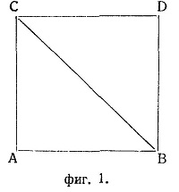
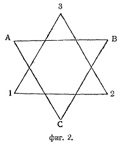
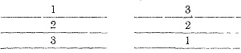

Беседа 1914 от 3877 · Беинса Дуно
Силата на ума
– Само светлият път на мъдростта води към истината.
– В истината е скрит животът.
Кои са качествата на силния и на слабия човек? Как мислите, на еднакво ниво ли са двамата?

В случая, коя от двете страни е положителна и коя – отрицателна? – Страната, към която човек се движи, е винаги отрицателна. Качваш се на планината, това е положителна страна; слизаш от планината, както малките деца със своите шейни, това е отрицателна страна. Обаче, децата не са изучавали още законите на физиката; не са изучавали и математическите закони, но като се спуснат от височината, шейната върви по инерция. Казваш: Моята шейна се движи без огън, без пара, но така тя се движи само до едно място и спира. Детето се чуди, защо става така и започва да се сърди на шейната. Много просто – шейната спря, защото е гладна, иска да яде. Като върви след човека, шейната се изкачва нагоре и като стигне определено място на височината, той ще я нахрани. После той казва: Ти се нахрани вече и трябва да слезеш долу. Какво означава “храненето“във физиката? – Смяна на енергиите: енергията от детето е минала в шейната.Така човек предава своята енергия при хвърляне на едно тяло в пространството. Това е физически закон, чрез който загубената енергия се възстановява – придобива се нова. Физическите закони се отнасят до физическия свят, а не до органическия. В органическия свят те могат да служат като условия, но не могат да се използват разумно.
Казвате: Много отслабнах. Значи, работил си много. – Какво да се прави? – Да ядеш, да дишаш и да мислиш. И по трите начина човек се храни. Като мислиш, това е храна; като дишаш, това е храна; като работиш, това е храна. Някой път мислите, че много знаете. Това е обикновено нещо. Ако чувствувам, че много съм ял, какво лошо има в това? Колко време може да ти държи това ядене? – Повече от 24 часа не може да ти държи. След това чувствуваш, че ти се яде. Като се нахраниш добре, казваш: Нищо не ми трябва и баница не бих ял. Но след известно време, наново чувствуваш, че ти се яде, не можеш да издържаш повече. Между нахранения и учения човек има известно сходство. Ученият казва: Аз зная много. Но дойде до едно място, дето се спъва и той казва: Нищо не зная. Щом се почувствувате в такова състояние, това показва, че вие сте работили много. Движили сте се в област, дето се явяват известни вътрешни преживявания.
Сънуваш някакъв сън. Събуждаш се разтреперан, облян в пот и с разтуптяно сърце. Казват, че сънят не е реално нещо. Обаче, като сънуваш, събуждаш се с добро или лошо разположение. Целият ден се вслушваш, какво ще ти се случи. Как се обяснява сънят научно? Има неща, които се случват в живота и без данни. Има неща, които произвеждат ефект на човека, без той да знае защо. Например, мнозина не знаят, що е топлината, въпреки това, усещат горещината и студа. Вън е студено. Веднага обличаш кожуха си и казваш: За нищо не бих хвърлил този кожух от гърба си. Не се минават един – два часа и казваш: Изпотих се с този кожух, ще го сваля. Коя е причината да съблечеш кожуха? Никой не ти заповядва да го съблечеш, никой не ти говори научно за топлината, но ти казваш: Горещо ми е, ще сваля кожуха. Щом го свали, ти се освободи от тежестта на топлината. Значи и топлината тежи. Какъв процес е изгарянето: положителен, или отрицателен? В една от приказките на „Хиляда и една нощ“се разказва, как действа топлината на хората. Тя милва умните и добрите хора, а глупавите изгаря. На гениалните хора тя разказва приказки, а обикновените хора наказва. Какво отношение има към топлината онзи, който страда и се оплаква от нея? Като срещна човек, обгорен от огъня, аз зная вече, какво е мнението му за него. Питам топлината, огъня: Защо си постъпил толкова лошо с този човек? – Защото е обикновен, глупав. С талантливия, гениалния постъпвам по особен начин. Като говоря за огъня, нямам предвид физическия огън, но съществата, които живеят в него. Като срещнат талантлив или гениален човек, те казват: Ти ще постъпиш така и така. На глупавия казват: Не стой на пътя ни! Ако не слушаш, ще те изгорим, на пепел ще те превърнем.
В живота на всеки човек съществуват три възможности: Да бъде той добър, или да бъде лош. Има и трета възможност, за която няма име в човешкия език. Трябва да се яви кръстник, да даде име на третата възможност. Детето се ражда без име. Щом го кръстят, дават му име и казват: Иванчо или Драганчо живее в третия етаж на къщата. Който няма име, носи номер. Доброто и злото, като възможности, представляват крайни точки на правата АВ в триъгълника ABC (фиг. 2 ). 
В миналото мъдреците са рисували триъгълници, като символи. При нещастие в живота, материалното е горе, а духовното – долу. При щастието, материалният живот е долу, а духовният – горе. Така е в природата, т.е. в разумния живот. И наистина, ако измениш нещата в човека, ти ще произведеш катастрофа. Например, ако туриш стомаха на мястото на главата, а главата – на мястото на стомаха, ще се измени ходът или движението на цялата природа. (Виж фигурите )

Следователно, човек е минал през резултатите на физическия свят, т.е. през резултатите на своето тяло. После, той е минал през силите, които действат в неговото сърце, т.е. през духовния свят. Смисълът на неговия живот е Божествения свят, който е още неразбран за него. Засега, човек възприема Божествения свят, като приятно предчувствие, като екстаз, като блаженство. Като се стремят към този свят, задачата на цялото човечество, на всички хора е да се освободят от нещастията си. Това става подсъзнателно. Три разумни, съзнателни същества управляват и контролират всички хора. Едното същество е на физическия свят. Около него са групирани милиарди души, които постоянно му се оплакват. Разрешението на социалните въпроси е резултат от оплакването на тези души. Те казват: Гладни сме, болни сме, страдаме. Какво да се прави? През същите изпитания минава и отделният човек. Боли те ръка, крак, оплакваш се, докато един ден болката изчезне. Боли те стомах, глава – пак се оплакваш. Вземеш рициново масло, пиеш малко вода и оздравяваш. Второто същество живее в астралния, т.е. в силовия свят, а третото живее в Божествения свят. Тези три същества съставят общия, Божествения организъм.
Днес всеки се стреми към здраве, към освобождаване от мъчнотиите си. Кой е пътят за освобождаване от мъчнотиите? Казваш: Роден съм. – Роден си, но си поставен при условия, които не са произволни. Ти си директор на банка, но това не е произволно. Ако си умен, банката ще върви добре; ако не си умен, банката ще фалира и отговорността за това ще лежи върху тебе. Кой от вас не е давал гаранция, за да се освободи от известна отговорност? Казваш, че си дал гаранция. Какво от това? Без гаранция никого не назначават. Може и без гаранция, но се изискват честни, съвършени хора. Най-голямата гаранция е човешкият ум. Ще ви кажа една тайна, а именно: Никой човек, прост или учен, не знае, откъде ще дойде неговото спасение. Казваш: Господ ще ни спаси. Ако сте убедени в това, защо досега не сте спасени? – Родителите ще ни спасят. – Всички имате родители, защо не са ви спасили? Единственото нещо, което ще ви спаси, то е вашият ум. В никой език досега аз не съм намерил по-силна дума от „ум“. За индусите тази дума е свещена – „ом“или “аум“. Тя се произнася и по двата начина. Българинът казва “ум“; англичанинът казва „майнд“. Същината на човека е неговият ум, а „ман“е човекът, който е бил. Значи, умът спасява човека. Който не се държи за своя ум, ще страда. Хората страдат, понеже не мислят. Те се водят по сърцето си, а не по ума си. Умът е Божественото начало в човека, което никога не се петни. Казва се “покварено сърце“, но не се казва покварен ум.
Казано е в Писанието: „Сине мой, дай ми сърцето си“. – Защо Бог иска сърцето на човека? – За да го изчисти. Как става очистването, това само посветените знаят. Така е било и във времето на Мойсей. Ако сърцето ти е чисто и умът силен, каквото пожелаеш, ще стане. Ако не мислиш, нищо не се постига. Право е казано, че вселената не е нищо друго, освен сбор от умствени процеси. Физическият свят е създаден от Божествения ум и от Божествената мисъл, която работи и досега. Не смесвайте ума си със сърцето. В ума няма недоволство, както в сърцето. Когато работиш и си недоволен от работата, знай, че сърцето се е вмъкнало в ума. То ти заповядва и ти се поддаваш на неговите чувства. Казваш: Тежко ми е. – Какво ще правиш тогава? Ще се качиш на върха 3 (фиг. 2 ). Точката „А“в триъгълника е умът, „В“е сърцето, “С“е съзнанието. Ще кажете, че това е предположение. И така може да е. Предположението не е наука, но специфичен метод. Науката е положително нещо. Тя представлява сбор от завършени процеси. Ти идваш при мене и казваш: Гладен съм. Бъркам в торбата си, изваждам хляб и лук. Сядаш някъде и започваш да ядеш. После отиваш при един философ и от него искаш хляб, но торбата му е празна. Философът изпраща този човек в някоя гостилница, далеч пет км от града. Хапнеш малко и се насърчиш. Ако не беше намерил ядене, трябваше да отидеш в друга гостилница, още по-далеч. Какво щеше да правиш, ако краката ти не държат. Не е лесно да ходиш от една гостилница в друга, докато се нахраниш. Някога е нужно и превозно средство. Като се намериш в материално затруднение, казваш: Да бях богат, да имах поне 50 000 лева на разположение!
И тъй, когато умът управлява човека, работите му се оправят лесно. Силен е умът. Ако имаш вяра, умът присъства в тебе; ако нямаш вяра и умът го няма. Казано е в Стария завет. „И рече безумният в сърцето си, че няма Бог“. Значи, безумният не вярва в Бога. Изобщо, вярата има отношение към човешкия ум, а присъствието на ума показва, че човек може да бъде спасен. – Как може да бъде спасен човек? – Представи си, че си пътник. Вървиш няколко дни в гората и огладняваш. Носиш в джоба си един магически ключ, чукнеш с него и пред тебе се открива един дворец. Около него голяма градина с плодни дървета, увиснали от плодове. Ти се спираш пред тях и си взимаш, колкото искаш. Дядо ти е оставил голямо наследство за тебе. Ще ходиш ли гладен при това богатство? И сиромашията, като те срещне и тя ти сваля шапка. Следователно, ако страдаш, ще знаеш, че умът не ти е станал още господар. Ако се радваш, знай, че даваш банкет на ума си. Щом почнеш да мислиш, умът ти е вече на работа. И в скръб, и в радост, умът е всякога на работа. Да мислиш за умрелия човек, това не е мисъл. Да мислиш за богатия и това не е мисъл. Трябва ли царят да мисли, кога ще стане богат? Той е богат, но трябва да мисли, как да направи своите поданици щастливи. Цар, който мисли за богатство, той носи вече сиромашията на гърба си. И блудният син, като дойде до положение да яде рожкови, каза: Осиромашах. И той отиде при баща си, да му стане последен слуга. Значи, само умът може да спаси човека. Ако се съмняваш, умът не е в тебе. Гневиш се, умът не е в тебе; боледуваш, умът не е в тебе. Много изпитания минаваш, но не намираш начин, как да си помогнеш. Щом дойде умът, всичко ще бъде на мястото си. Казвам и на вас: Измийте добре къщата си, боядисайте вратите, изчистете прозорците и умът ще дойде.
Слушайте всичко, каквото умът ви казва. Който слуша ума си, никога няма да страда. Всички науки са достояние на ума. Като дойде умът на мястото си, ще знаете, какво да ядете, как да ядете, как да се обличате, с кого да дружите. Не е лесно да бъдеш приятел на човека. Има една специфична черта в човека, по която можеш да познаеш, дали ти е приятел. По тази черта се познава и честният човек. Истински приятел е онзи, на когото плодовете на живота са узрели.
Като ви говоря тези работи, мнозина казват: Известно ни е това. – Какво знаете вие? Можете ли да се борите с мечката и да я победите? За да се борите с мечката, трябва да бъдете пъргави и подвижни. Хвани я за пъпа и ще я повалиш на земята. Ще кажеш, че да я победиш, това е случайност. Напротив, ум се иска за това. Като знаеш слабата страна на мечката, лесно ще я победиш. Всички мъчнотии в живота се побеждават със знание. Ще знаеш, че силните неща се намират в слабата, но разумна страна. Мечката е мъчнотия, задача за разрешаване. Ако не се справиш с мечката, не си решил задачата. Отиваш при един майстор – цигулар и той ти показва, как да държиш цигулката, лъка, как да движиш пръстите си. Ти знаеш това, но пак не ти върви. Защо не ти върви? Работа е нужна за всички. Който не работи, ще живее, но животът му ще бъде като на обикновените хора. Поет си, пишеш отлични стихове.Как си постигнал това? – Пак чрез работа. Въпреки това, хората се стремят към спокоен, тих живот, без много работа и усилия. Ако търсите спокойствие, ще го намерите на гробищата.
Не търсете щастието във вашите къщи – истински затвори. Къщата е умът; имаш ли ум, имаш къща, имаш богатство, имаш и знания. Тогава ще бъдеш и философ и поет. Ще кажеш, че повече ум ти трябва. – Умът нито се умножава, нито се дели. Сега ще ви дам една формула. Като станете от сън, кажете си: Само умът носи моето щастие. Само умът носи моята сила. Само умът носи всички възможности, от които мога да се ползвам. Само така ще бъдеш свързан с ума си. Умният всякога говори истината. Ако счупи едно шише, той не скрива истината, но намира друго, по-хубаво и го слага на мястото на счупеното. Той не се извинява, но веднага изправя грешката си. Господарят не прощава погрешката, но казва: Шишето трябва да бъде на мястото си. Само истината спасява човека.
И тъй, бъдете умни! Работете и с ума и със сърцето си. Сърцето е подобно на щерна, която се пълни от дъждовете. Някога щерната пресъхва. Тогава ще отидеш на извора, който тече денонощно. Водата на щерната е застояла, а на извора – всякога прясна и чиста. В тази вода е вашето щастие. То върви подир ума. Много естествено, умът се движи по-бързо от щастието. Сърцето се движи по-бавно. То прилича на биволска кола. В друго отношение, то прилича на опърничавата слугиня, която в гнева си, всичко руши. Каквото среща на пътя си, всичко удря, чупи, блъска. Човек първо е чувствувал, а после мислил, но пак не си оправил работите. А сега, първо ще мисли, а после ще чувствува. Умът носи светлина и живот. В ума няма никакъв спор, понеже в него е изобилието. Спорът се явява в сърцето, понеже то има всякога желание да взима. В сърцето е недоимъкът, а в ума – изобилието. В него има изобилно хляб и можеш да ядеш, колкото искаш. В сърцето има само един хляб. Ако го разделиш на хиляда души, непременно ще се яви спор.
– Само светлият път на мъдростта води към истината.
– В истината е скрит животът.
10. Лекция от Учителя, държана на 25 ноември, 1932 г.
София – Изгрев.